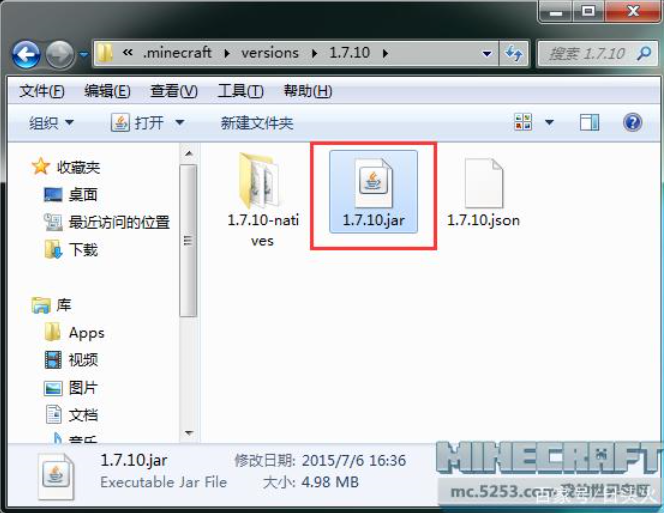
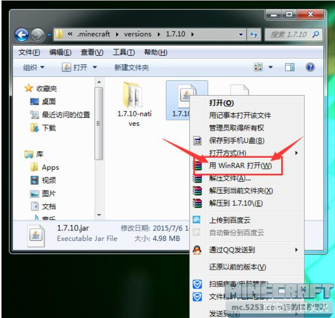
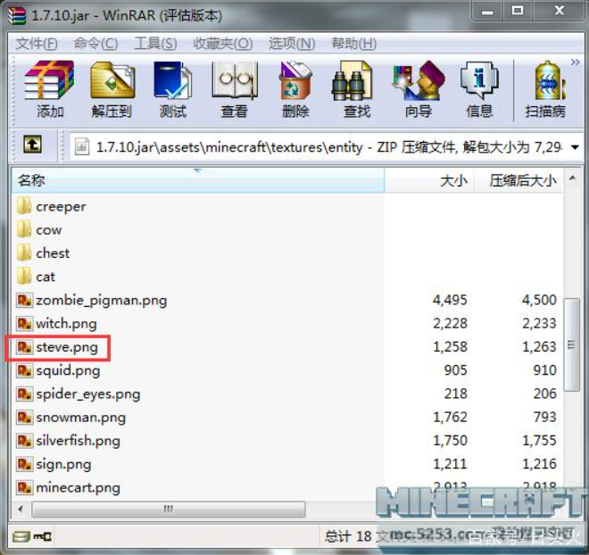

皮肤替换教程
第一步：找到游戏版本
首先玩家需要先找到游戏版本路径,路径如下。 游戏安装目录\.minecraft\versions 一般情况下.minecraft文件夹会在你所安装的游戏文件夹下面例如下图。 然后找到你想更换的版本，点击进入文件夹即可。
第二步：找到游戏皮肤
当你找到了自己在使用的版本后，进入这个文件夹，找到下图中这个文件。

使用鼠标“右键”点击文件，然后使用压缩软件打开。

按照这个路劲打开：\assets\minecraft\textures\entity

当你看到你steve.png这个文件的的时候说明你已经找到了游戏的皮肤了。
第三步： 首先找到你已经下载好的皮肤，选中它然后按“CTRL+C”或者鼠标右键点复制。然后按下“CTRL+V”黏贴到之前用压缩软件打开的皮肤目录中，然后会有提示框出来，直接点确定即可。